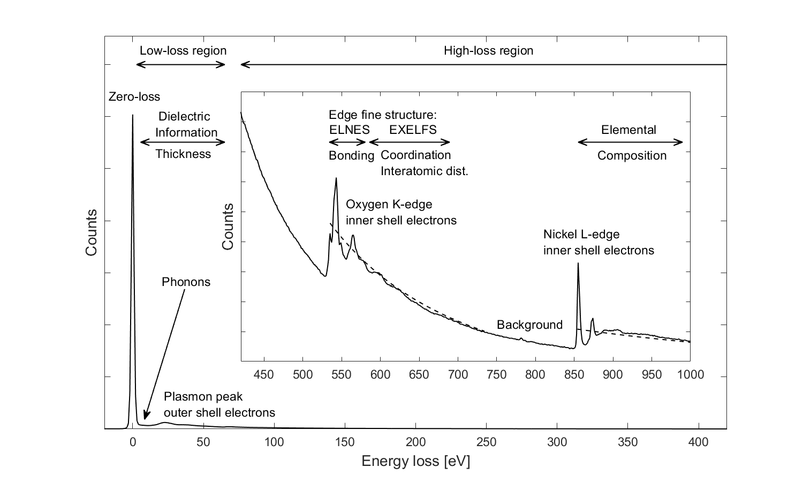

Electron Energy Loss Spectroscopy - EELS
Electron energy loss spectroscopy is an analytical technique used to gain elemental, chemical or dielectric information from samples. It is typically performed in scanning transmission electron microscopes (STEM) with beam energies of $60-200 ~ keV$. In this configuration, the energy loss of the transmitted electron beam is analyzed, which originates from inelastic scattering in the sample. The energy loss is hereby measured by passing the transmitted beam trough a magnetic prism, located below the specimens chamber. This prism disperses the beam according to its kinetic energy, which is directly related to the energy loss due to prior interactions with the sample. The EEL spectrum typically covers the range from $0$ to $3~keV$ loss, with an energy resolution determined by the initial energy spread of the beam $\Delta E \approx 0.1 - 3~eV$.
EEL spectra are generally divided into two regions. A low-loss-region from $0$ to $50~eV$ and a high-loss-region with losses greater than $50~eV$. The amplitude of the high loss spectrum is amplified by a factor of $100 - 1000$, as the probability for scattering at these energies is much lower compared to the low-loss region. This scattering probability is generally described by the differential cross-section $\frac{d \sigma}{d E}$. The following figure shows an overview of the different excitation sources which can be seen in an EEL spectrum.

The most prominent feature in the low loss region is the zero loss peak, originating from elastically scattered electrons with no energy loss. Measuring the full width at half maximum of the zero loss peak allows to determine the energy resolution of the system. Furthermore, it can be used to estimate the relative sample thickness, by using the log-ratio technique, which is based on a Poisson model for thickness dependant electron scattering.
After the zero loss peak, several plasmon peaks could be observed. They originate from the excitation of multiple bulk and surface plasmons in the sample, and could occur at integer multiples of the fundamental plasmon energy $E_p = \hbar \omega_p$. The position of the plasmon peaks could be used to calculate the electron density with the plasma frequency $\omega_P$
\[ \begin{equation} \label{plasmon}
\omega_P^2 = \frac{4\pi n e^2}{m}
\end{equation} \]
The whole low loss region of an EELS spectrum contains also dielectric information about the sample as the differential cross section $\frac{d \sigma}{d E}$ at those energies is proportional to $\epsilon(E)$, [1]
\[ \begin{equation} \label{cross-section}\frac{d \sigma}{d E} \approx \frac{2}{\pi a_0 m_0 v^2 n_a} Im \left(\frac{-1}{\epsilon (E)}\right)\ln{\left[1+\left(\frac{\beta}{\theta_E}\right)^2\right]}
\end{equation} \]
where $a_0$ is the Bohr radius, $v$ the velocity of the electrons, $n_a$ the density of atoms, $\beta$ the collection angle of the electrons and $\theta_E = E/(\gamma m_0 v^2)$ a characteristic scattering angle.
The Kramers-Kronig relationships could be exploited to compute the full dielectric function, and therefore also the optical properties of the material.
The high-loss region contains information about the elemental composition, bonding, coordination numbers and interatomic distances of the elements in the sample. Those properties are all encoded in the structure and position of the excitation edges. These edges occur when inner shell electrons of the atoms are ionized by the incident electron beam. The critical ionization energy for such an excitation is dependant on the specific element, and the initial state of the core electron. Therefore, the position of edges in the EEL spectrum is a unique signature of the elemental composition of the sample. The edges are labeled after the initial state of the electron, and usually show up as sudden increase in the EEL spectrum, followed by a slow decrease in intensity with increasing energy loss. Adjacent edges are generally superimposed on the background created by other edges at lower energies, making background subtraction a crucial task for successful edge classification. See for example the core loss spectrum of tin or silver with the prominent $L_3$, $L_2$ and $L_1$ edges, corresponding to excitations from the $2p^{\frac{3}{2}}$, $2p^{\frac{1}{2}}$ and $2s^{\frac{1}{2}}$ states into the unoccupied density of states.
The probability for such transitions in an EEL-spectrum can be computed by summing over the product of the probabilities of a transition $|\langle f|qr|i\rangle|^2$, with the density of states of the final state $N_f(E)$ of the electron: [2]
\[ \begin{equation} \label{high_loss_exc}
\frac{d^2 \sigma}{d E d \Omega} \approx \sum_f |\langle f| \exp{(iqr)}|i\rangle|^2 \cdot N_f(E)
\end{equation} \]
The translation operator $\exp{(iqr)}$ could be expanded as Taylor series for small scattering vectors $q$. In this case, the orthogonality between the different wave-functions $\langle i|$ and $\langle f|$ can be exploited to further simplify the expression:
\[ \begin{equation} \label{high_loss_exc2}
\frac{d^2 \sigma}{d E d \Omega} \approx \sum_f |\langle f|qr|i\rangle|^2 \cdot N_f(E)
\end{equation} \]
Therefore, the transition probability is directly proportional to the unoccupied density of states, as well as to the transition matrix element $|\langle f|qr|i\rangle|^2$. This transition matrix element restricts the possible excitations to dipole allowed transitions, with an angular momentum change of $\Delta \mathcal{l} = \pm 1$ (eg. transition from $2p^{\frac{3}{2}}$ into s-, or d-states). Additionally, sufficient overlap between the initial-, and final state is required, allowing only transitions to the same atomic site.
The overall structure of the excitation edges is nevertheless mainly determined by $N_f(E)$, as $|\langle f|qr|i\rangle|^2$ varies only slowly with energy. Thus, the structure of the excitation edges in EELS depicts the local, symmetry projected, unoccupied density of states. This is often referred as energy-loss near edge fine structure (ELNES), an can be used to determine bonding and coordination information of the sample.
The following figure shows measured EEL spectra of various elements, some of which are in their oxide form. [3] Different edge shapes could be identified, depending on the unoccupied density of states. For example, transition metals with an unoccupied d-band exhibit characteristic peaks (white-lines), originating from excitations into this sharp energy level.
|
A special variant of EELS is (H)REELS, where the energy loss of a reflected electron beam is studied. This analysis is usually performed at much lower beam energies than conventional EELS measurements, providing a much higher surface sensitivity, as well as energy resolution (down to $meV$).
References
[1] Egerton, R. F. (1996) Electron energy-loss spectroscopy in the electron microscope. 2. ed.
[2] C. Colliex, T. Manoubi, M. Gasgnier et al., Scanning Electron Microscopy, vol. 11 (1985) p. 489-512 C. Colliex, Near Edge Fine Structures on Electron Energy Loss Spectroscopy Core Loss Edges
[3] Source of the EEL-spectra EELS atlas and EELS data base
Further Reading:
Highly recommended side with lots of infos: EELS.info